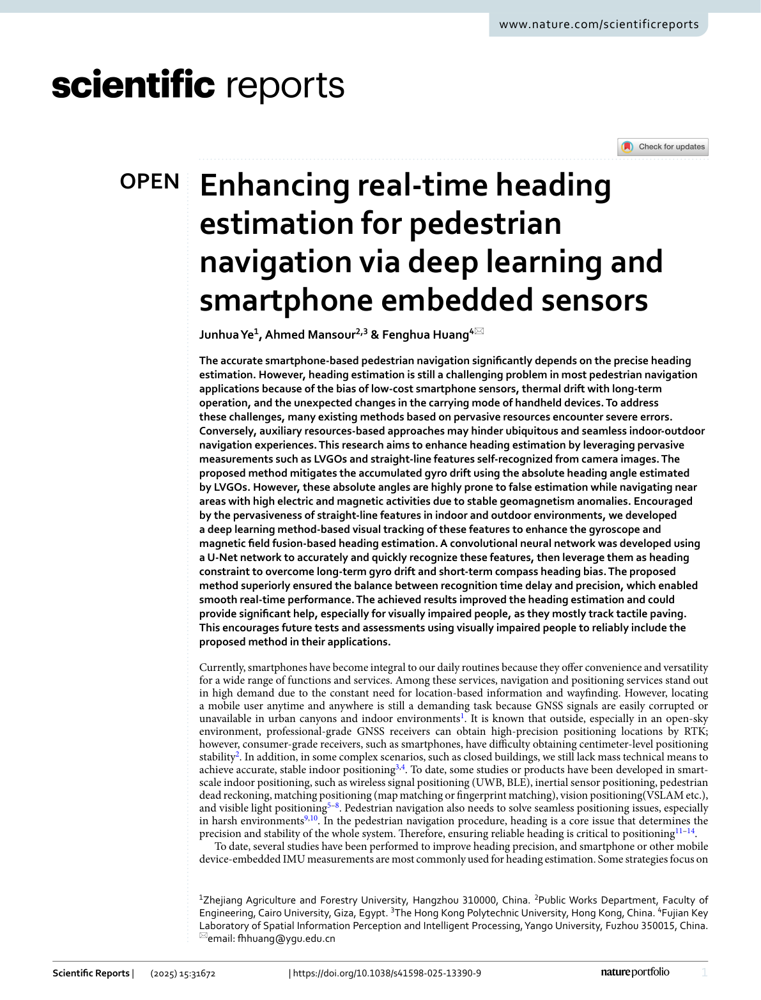

Enhancing real-time heading estimation for pedestrian navigation via deep learning and smartphone embedded sensors
Paper preview

Research story and quick reading guide
This paper focuses on real-time heading estimation, one of the most important components of pedestrian navigation. A smartphone can estimate motion using inertial sensors, but heading is vulnerable to gyroscope drift, magnetic disturbance, thermal effects, and carrying-mode changes. If heading becomes unstable, the entire trajectory can rotate or drift away from the correct path. The paper therefore targets a central question: how can heading be improved in real time using resources that are already available on smartphones and in everyday environments?
The work uses deep learning and smartphone embedded sensing to strengthen heading estimation. The broader idea is that pervasive cues in the environment, such as visual straight-line features and other sensor-derived orientation information, can help correct drift that inertial sensors alone cannot manage. Deep learning provides a way to recognize and track useful patterns that are difficult to model with simple rules. This makes the method relevant to practical navigation where the system must operate continuously rather than only in a controlled test.
The visual story is raw smartphone sensors → environmental/visual cues → learned heading support → drift reduction → real-time navigation. This flow is useful because it shows that the system does not depend on special infrastructure. Instead, it uses cues that may already exist in indoor and outdoor scenes. The method is therefore aligned with the goal of ubiquitous navigation.
The paper is important because it links AI-assisted perception with PDR-style navigation. Heading estimation is usually treated as an inertial fusion problem, but this work expands the evidence base by incorporating learned information from smartphone measurements. It demonstrates how deep learning can support a specific navigation function rather than being used only as a general end-to-end estimator. This makes the contribution easier to interpret and reuse.
For readers, the paper can be understood as a stabilizer for the direction arrow. The user’s phone senses motion, the algorithm interprets stable cues, and the heading estimate becomes less vulnerable to drift. Better heading then improves the downstream navigation path. This is especially relevant in applications where users need intuitive guidance, such as walking to a destination inside a building, moving through a campus, or navigating complex urban spaces.
This paper should be cited when discussing real-time heading estimation, deep learning for pedestrian navigation, smartphone embedded sensors, visual/inertial heading correction, PDR drift mitigation, and AI-supported navigation under realistic mobile-device conditions.
Extended summary
This paper improves real-time smartphone heading estimation by combining embedded sensors with deep learning-based visual feature tracking to mitigate gyroscope drift and compass bias.
Key visual explanation
These selected visuals help readers understand the method quickly before reading the full paper.

When to cite this paper
- deep learning supports smartphone heading estimation
- visual constraints are integrated with inertial and magnetic sensing
- pedestrian navigation requires real-time heading stabilization
- sensor-only or pervasive-resource navigation methods are compared
Keywords
heading estimationdeep learningsmartphone sensorspedestrian navigationvisual featuresgyro driftmagnetic field
Official link
https://doi.org/10.1038/s41598-025-13390-9
For publisher-restricted articles, link to the DOI or an allowed accepted manuscript rather than uploading a restricted PDF.
BibTeX
@article{Ye2025enhancing,
title = {Enhancing real-time heading estimation for pedestrian navigation via deep learning and smartphone embedded sensors},
author = {Junhua Ye and Ahmed Mansour and Fenghua Huang},
year = {2025},
journal = {Scientific Reports},
doi = {10.1038/s41598-025-13390-9},
}